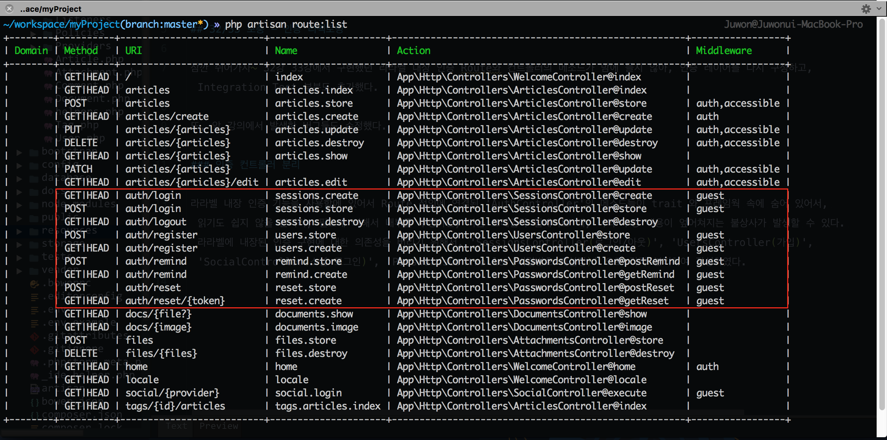
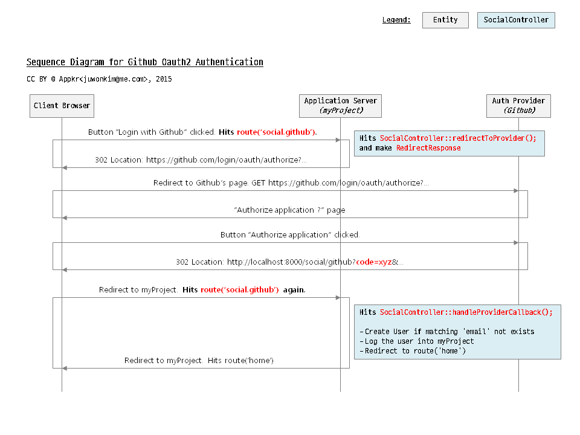

실전 프로젝트 2 - Forum
32/33 보충 - 인증 리팩토링
잠깐 쉬어가자~ 32강 33강에서 구현했던 라라벨 내장 인증 Route와 컨트롤러의 메소드가 맘에 들지 않아, 인증 레이어를 다시 구성하고, Integration Test 부분도 추가했다.
또, 앞 강의에서 발생한 버그들도 수정했다.
인증 재구현
라라벨 내장 인증 기능을 사용함에 있어서 Route 정의에 연결된 'AuthController'의 메소드들이 trait 와 프레임웍 속에 숨어 있어서, 읽기도 쉽지 않을 뿐더러, 필요에 의해서 내부를 수정하면, 다음 프레임웍 업데이트 때, 나의 수정 내용이 엎어쳐지는 불상사가 발생할 수 있다. 라라벨에 내장된 인증 구현에 대한 의존성을 버리기 위해서,
App\Http\Controllers\UsersController(가입)App\Http\Controllers\SessionsController(로그인/아웃)App\Http\Controllers\SocialController(소셜 로그인)App\Http\Controllers\PasswordsController(비밀번호 재설정)
으로 각각 분리하여 작성하였다.
문제점 인식
서비스마다 로그인에 대한 정책이 있기 마련인데, 필자는 우리 서비스(이하 'myProject')의 사용자들이 소셜 로그인도 할 수 있고, 네이티브 로그인도 할 수 있게 하고 싶다. 여기서는 사용자의 Github 이메일 계정과, myProject 에 회원 가입한 이메일 계정이 동일할 경우만을 가정한다.
참고 Github 이메일과 myProject의 사용자 이메일 주소가 서로 다르다면, 두 개의 서로 다른 계정으로 인식될 것이다. 즉, myProject 에 들어와서 사용자가 생성하는 Article, Comment 등의 모델은 그때 그때 로그인한 소셜 또는 네이티브 사용자에게 속할 것이다. 프로그램적으로 해결할 수 있는 문제가 아니므로, 정책적으로 해결하거나, 사용자가 수동으로 계정을 연결할 수 있는 방법과 장치를 제공해야 할 것이다.
기존 소셜 로그인 코드를 잠시 살펴 보자. 아래 코드에서 User::firstOrCreate() 메소드에서 Github 로 부터 받은 정보를 이용하여 'password'가 없는 사용자를 생성하고 있다는 것을 기억하고 있자.
// 기존 코드
// app/Http/Controllers/Auth/AuthController.php
public function handleProviderCallback()
{
$user = \Socialite::driver('github')->user();
$user = User::firstOrCreate([
'name' => $user->getName(),
'email' => $user->getEmail(),
]);
...
}아래와 같은 경우의 수가 발생할 수 있다.
- myProject 에 회원 가입을 먼저하고, 소셜 로그인을 시도하는 경우
- 사용자 이름까지 같을 경우 -> 로그인 됨
- 사용자 이름이 다르면, 사용자 생성을 시도하게 됨 -> 동일 이메일을 가진 User 가 하나 더 생김
- 소셜 로그인을 하여, 빈 'password'를 가진 User 모델이 생성된 상태에서, 네이티브 인증을 시도하는 경우
- 'password' 가 없으므로 네이티브 로그인 불가능
- myProject 에 회원 가입을 시도하는 경우, 같은 이메일을 가진 User 가 이미 있으므로 가입 불가능
다음과 같은 방법으로 해결해 보자.
- myProject 에 회원 가입을 먼저하고, 소셜 로그인을 시도하는 경우
firstOrCreate()부분을 'email'로 먼저 쿼리하고, 없으면 User를 생성하는 로직으로 다시 작성하자.
- 소셜 로그인을 하여, 빈 'password'를 가진 User 모델이 생성된 상태에서...
- myProject 에 회원 가입을 시도하는 경우, 기존 소셜 로그인으로 'password' 없이 생성된 계정에 'password'를 업데이트한다.
- 비밀번호 재설정을 시도하는 경우, 소셜 로그인 사용자라고 안내한다.
우선, 기존 마이그레이션의 'password' 필드에 nullable() 속성을 추가하였다. 수정했으면 $ php artisan migrate:refresh --seed
// database/migrations/create_users_table.php
public function up()
{
// ...
$table->string('password', 60)->nullable();
}Route 정의

잘 보면, Route::get('social/{provider}', 'SocialController@execute') 부분에서 'social/github', 'social/facebook' 등으로 소셜 로그인 공급자를 더 붙일 수 있도록 Route 구조를 좀 변경할 것을 확인할 수 있다.
// app/Http/routes.php
/* User Registration */
Route::get('auth/register', [
'as' => 'users.create',
'uses' => 'UsersController@create'
]);
Route::post('auth/register', [
'as' => 'users.store',
'uses' => 'UsersController@store'
]);
/* Social Login */
Route::get('social/{provider}', [
'as' => 'social.login',
'uses' => 'SocialController@execute',
]);
/* Session */
Route::get('auth/login', [
'as' => 'sessions.create',
'uses' => 'SessionsController@create'
]);
Route::post('auth/login', [
'as' => 'sessions.store',
'uses' => 'SessionsController@store'
]);
Route::get('auth/logout', [
'as' => 'sessions.destroy',
'uses' => 'SessionsController@destroy'
]);
/* Password Reminder */
Route::get('auth/remind', [
'as' => 'remind.create',
'uses' => 'PasswordsController@getRemind',
]);
Route::post('auth/remind', [
'as' => 'remind.store',
'uses' => 'PasswordsController@postRemind',
]);
Route::get('auth/reset/{token}', [
'as' => 'reset.create',
'uses' => 'PasswordsController@getReset',
]);
Route::post('auth/reset', [
'as' => 'reset.store',
'uses' => 'PasswordsController@postReset',
]);중요 Route 정의가 변경되었으므로, 회원 가입, (소셜) 로그인, 비밀번호 재설정 관련해서 기존에 뷰 코드에 박아 놓았던, route() Helper 를 이용한 링크들을 모두 수정해 주어야 한다.
참고 기존에 'resources/views/auth' 아래에 위치하던 뷰들도 'users', 'sessions', 'passwords' 아래로 옮기고, 이름도 적절히 변경하였다. 각 컨트롤러에서 view()를 반환할 때 바뀐 위치로 적용해 주어야 한다.
'SocialController(소셜 로그인)' 구현
앞 절의 Route 정의에서 Route::get('social/{provider}', 'SocialController@execute')로 썼다. 소셜 인증 과정에는 Github 'Authorize application' 페이지로 이동하는 Route 하나, 앞 과정에서 사용자가 승인하면 Github 에서 myProject 로 콜백해 주는 Route 총 두 개가 필요했던 것을 execute() 하나로 줄였다. execute() 메소드에서 myProject의 Router로 들어오는 HTTP 요청 쿼리스트링의 'code' 필드의 유무에 따라 분기시킨 것이다. 전체적인 과정은 아래 그림을 참조하자.

$user = (\App\User::whereEmail($user->getEmail())->first()) ?: \App\User::create([...]); 부분에서 기존의 firstOrCreate() 메소드를 다시 썼다. 'email' 로만 쿼리해서 있으면 myProject 에 로그인해 주고, 해당 'email'을 가진 레코드가 없으면, 'email', 'name' 필드를 가진 사용자를 생성시키도록 수정하였다.
// app/Http/Controllers/SocialController.php
class SocialController extends Controller
{
public function execute(Request $request, $provider)
{
if (! $request->has('code')) {
return $this->redirectToProvider($provider);
}
return $this->handleProviderCallback($provider);
}
protected function redirectToProvider($provider) { // ...}
protected function handleProviderCallback($provider)
{
$user = $this->socialite->driver($provider)->user();
$user = (\App\User::whereEmail($user->getEmail())->first())
?: \App\User::create([
'name' => $user->getName(),
'email' => $user->getEmail(),
]);
// ...
}
}Route 가 바뀌었으므로, Github Developer Applications Console를 방문하여 Authorization callback URL 을 'http://localhost:8000/social/github' 로 변경하여야 한다.
참고 handleProviderCallback() 에서 보통은 Github 에서 받은 사용자 정보로 폼을 포함한 뷰를 한번 더 사용자에게 보여주며, 다른 이메일, 비밀번호, 사용자 이름 등을 더 받아 App\User 모델로 저장하는 것이 정석이다. 이렇게 구현하면, 위에서 언급한 복잡한 Sync 과정이 불필요하다.
UsersController(가입) 구현
기존 대비 특별히 달라진 부분들만 살펴보도록 하자.
store() 메소드에서는, 먼저 App\User 모델에 새로 정의한 noPassword() (== whereNull('password')) 란 쿼리스코프를 이용하여 회원 가입 요청에서 사용자가 제출한 'email' 값과 일치하고, 'password' 가 null 인 사용자를 찾는다. 이는 소셜로 로그인하면서 생성된 계정을 의미한다. 소셜로 생성된 계정이면 syncAccountInfo() 메소드로 처리 로직을 위임하고, 소셜 로그인 이력이 없는 회원 가입 요청이면 createAccount() 메소드로 위임했다.
syncAccountInfo() 메소드에서는, 사용자가 회원 가입 폼에 입력한 값들에 대한 유효성 검사를 수행하고, 통과하면 폼에서 넘겨 받은 'password' 값으로 기존에 null 이던 값을 대체하였다. Github 사용자 이름과, myProject 에서 사용하는 이름이 다를 수 있으므로, 'name' 필드도 넘겨 받은 값으로 업데이트하였다. 여기서 주목할 점은 createAccount() 메소드와 폼 데이터에 대한 유효성 검사 규칙이 약간 다르다는 것이다. 소셜 로그인으로 이미 사용자는 생성된 상태이므로, 'email' 필드 검사 규칙에서 'unique:users' 규칙이 빠졌다.
createAccount() 는 기존과 크게 달라진 점이 없다.
// app/Http/Controllers/UsersController.php
class UsersController extends Controller
{
public function store(Request $request)
{
if ($user = User::whereEmail($request->input('email'))->noPassword()->first()) {
// Filter through the User model to find whether there is a social account
// that has the same email address with the current request
return $this->syncAccountInfo($request, $user);
}
return $this->createAccount($request);
}
protected function syncAccountInfo(Request $request, User $user)
{
$validator = \Validator::make($request->except('_token'), [
'name' => 'required|max:255',
'email' => 'required|email|max:255',
'password' => 'required|confirmed|min:6',
]);
if ($validator->fails()) {
return back()->withInput()->withErrors($validator);
}
$user->update([
'name' => $request->input('name'),
'password' => bcrypt($request->input('password'))
]);
\Auth::login($user);
flash(trans('auth.welcome', ['name' => $user->name]));
return redirect(route('home'));
}
protected function createAccount(Request $request) {// ...}
}SessionsController(로그인/아웃) 구현
여기서는 기존 대비 크게 달라진 점이 없이, trait나 프레임웍 속에 숨어 있던 것을 도메인레이어로 옮겨 놓았을 뿐이므로, 설명을 생략한다.
PasswordsController(비밀번호 재설정) 구현
myProject 에 가입하지 않고, 소셜 로그인으로만 사용하던 사용자가 갑자기 비밀번호 재설정 시도를 할 경우를 대비한 방어조치만 추가했다. 나머지 부분들은 기존 대비 크게 다르지 않다.
// app/Http/Controllers/PasswordsController.php
public function postRemind(Request $request)
{
// ...
if (User::whereEmail($request->input('email'))->noPassword()->first()) {
flash()->errors(sprintf("%s %s", trans('auth.social_olny'), trans('auth.no_password')));
return back();
}
//...
}인증 관련 통합 테스트 추가
설명은 생략하지만, 'tests/Http/Controllers' 디렉토리 하위에 포함된 코드들을 살펴보고, 테스트를 수행해 볼 것을 권장한다. 필자가 아직은 실력이 미천해서 외부로 HTTP 요청이 발생하는 'SocialController' 와 이메일을 보내야 하는 'PasswordsController' 부분은 테스트 코드를 쓰지 못했다 (PR 또는 가르침 환영합니다 ^^/)
$ phpunit디버그 및 자잘한 개선
'config/services.php' 에 하드코드로 박아 놓았던 Github 소셜 로그인 관련 설정 값들을 '.env'로 옮겼다.
로그인 하지 않은 상태에서 @if (auth()->user()->isAdmin() ...) 이 들어간 뷰를 방문하면 null 포인터 에러가 나는 버그가 있었다. @if ($currentUser and ($currentUser->isAdmin() ...)) 으로 변경하였다. 로그인을 하면 auth()->user() 는 로그인한 사용자에 해당하는 App\User 인스턴스를 반환하는데, 로그인 되어 있지 않으면 null을 반환한다. null->isAdmin() 은 당연히 성립할 수 없는 코드이다.
아울러, 뷰 코드에 Auth::check() 로 된 부분들도 App\Http\Controlelrs\Controller::__construct() 에서 뷰에 공유한 $currentUser 변수로 대체하였다. 만들었으면 써야 하기에...
코드에디터(또는 IDE)에서 Cmd + Mouse Click 으로 , Facade 에 연결된 메소드로 이동을 쉽게 하기 위해서 'barryvdh/laravel-ide-helper' 패키지를 Dev Dependency 로 추가하였다. $ composer require barryvdh/laravel-ide-helper --dev. 설정법은 스스로 찾아서 적용하기 바라고, 설명하고 싶었던 것은 다른 것이다. 개발 과정 중에만 필요한 패키지를 설치하고, 해당 패키지가 제공하는 ServiceProvider를 'config/app.php' 에 등록할텐데, production 서버에 올릴 때 매번 불필요한 패키지 라인을 주석처리 하는 것은 귀찮은 일이다. 이때 App\Providers\AppServiceProvider 를 이용하면 편리하게 local 또는 dev 환경일 때만 로드되도록 할 수 있다. 참고로 아래 코드에서 $this->app->environment() 는 \App::environment() 또는 app()->environment() 로도 쓸 수 있다.
// app/Providers/AppServiceProvider.php
public function register()
{
if ($this->app->environment('local')) {
$this->app->register(\Barryvdh\LaravelIdeHelper\IdeHelperServiceProvider::class);
}
}